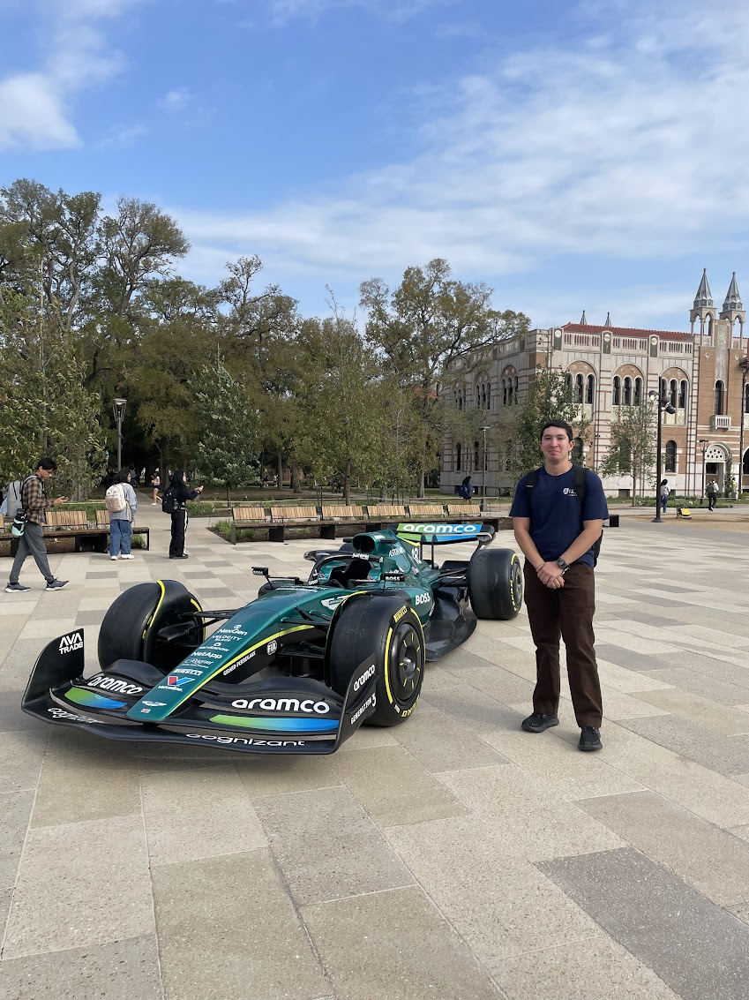

About Me
Hello! I'm Marcelino Alaniz, an Electrical and Computer Engineering student at Rice University in Houston with a passion for technology and innovation. I'm set to graduate in May 2026 with my B.S. EE. Prior to my time at Rice, I completed my Associate of Art in General Studies at San Jacinto College in Pasadena with a perfect 4.0 GPA. In my free time, I enjoy lifting weights and checking out different coffee shops near me (maybe I will make a page about that on this site). Feel free to reach out and learn more about me.
Current Projects
- Working with MSPM0G3507 microcontroller in ELEC 327.
- Building a lane-keeping car controlled by a Raspberry Pi Zero in ELEC 424
- In ELEC 326, designed a 16-bit one-cycle processor using Verilog logic on a Real Digital Boolean Board.
- Participating in various tech internships and externships.
Experience Highlights
- Currently a Technology Teaching Assistant at Rice University, supporting professors with educational software like Zoom, Canvas, and classroom hardware.
- Active member of Rice University Robotics Club where I work on the ELEC Rover team, building a rover for the first time in club history.
- Previously had NASA Summer Robotics Academy Internship, where I developed skills in electromechanical systems design and space vehicle documentation.